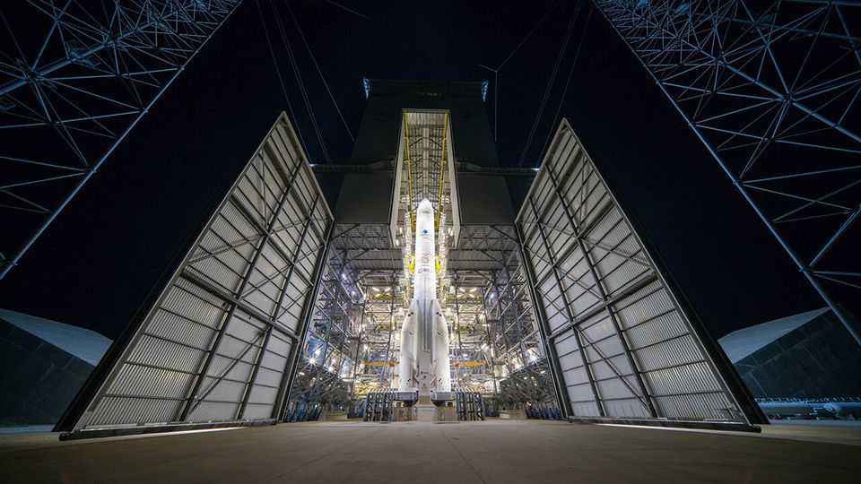
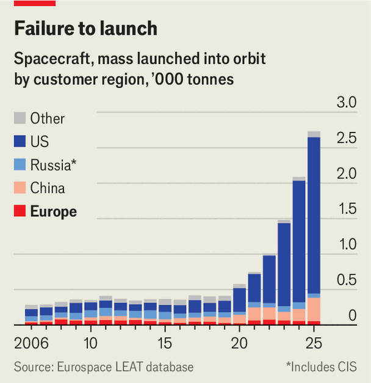

Europe’s dependence on America in space is hard to escape
To reach autonomy in rockets and satellites, the continent needs more thrust

Oct 22nd 2026
THE STRONGEST signals that America is turning against Ukraine have come, this month, from outer space. Ukrainian drones’ connections to Starlink, Elon Musk’s satellite-internet service, cut out at speeds above 160kph. Russian ballistic missiles smacked into Kyiv without the usual warnings from American spy satellites. Ukraine’s European allies reacted with deep foreboding. European defence chiefs can offer Ukraine only partial substitutes for American intelligence and communications networks. And they worry about their own dependence on America’s space-based capabilities, about whether these will stay available if Russia attacks and about how quickly they can develop their own alternatives.
All this is hastening efforts to develop alternatives. The day after Ukraine said restrictions had been placed on Starlink, shares in its closest European competitor, Eutelsat, surged by 23%. The European Union then moved to speed up the glacial pace of regulatory approval for merging the satellite-making businesses of three large European aerospace companies, hoping to create one big enough to compete with Mr Musk’s SpaceX. And on October 19th four of the region’s largest telecommunications firms said they wanted to partner with a satellite company to compete with Starlink.
Yet Europe has a long way to go before it can hope to achieve “autonomy in space”, as the jargon has it. In three crucial areas, it depends on America. The first is satellite-internet service for civilians and the armed forces. The second is space-based intelligence, surveillance and reconnaissance (ISR) and early warning for defence. And the third is launch capacity: the rockets and spaceports needed to put a large number of satellites into orbit.
For decades, the space gap between Europe and America was widest in defence. America kept Europe dependent in part by letting its allies freeload on programmes such as SBIRS, an $18bn missile-warning constellation. But America also opposed Europe’s efforts to develop its own capabilities. It initially tried to block Galileo, a satellite navigation system, on the grounds that it would compete with America’s own GPS satellites, and could be used by its enemies.

Now, however, the biggest gap is in satellite internet, where America has rocketed ahead. Europe’s closest answer to Starlink is OneWeb, whose parent company, Eutelsat, is partly owned by the French and British governments. (Britain bailed the firm out after it collapsed in 2020, and both countries injected more capital last year.) OneWeb was founded in 2012, three years before Starlink, but was rapidly eclipsed by it: as a division of SpaceX, Mr Musk’s world-beating rocket company, Starlink had plenty of cash to fuel its massive expansion (see chart). The entry of other private firms may widen America’s lead. Amazon’s Leo aims to offer satellite internet later this year.
OneWeb has a number of terminals in Ukraine, some paid for by Germany, and is used by several European armed forces, including the French and British navies. It is also deployed on some aerial and naval drones. But it is not a direct replacement for Starlink. OneWeb has about 600 satellites; Starlink has more than 10,000. The European system cannot carry as much data or serve as many users in any one area. And because its satellites are in a much higher orbit, users need bigger terminals, the cheapest of which cost around $9,000—roughly 45 times more than a basic Starlink terminal. Kaja Kallas, the EU’s top diplomat, acknowledged this before meeting Mr Zelensky on October 16th: “Starlink is really necessary for Ukraine and unfortunately in the short term Europe can’t replace this capability.”
The EU plans to spend €15bn ($17bn) on IRIS2, a constellation of 348 communications satellites to be used by its members’ governments and armed forces. But the first will be launched only in 2029. Germany, meanwhile, plans its own network of 100 military-communications satellites at a cost of around €10bn. That has led to concerns of duplication and fragmentation.
There is more encouraging news when it comes to the second area of concern, space-based ISR, mainly thanks to private European newcomers that produce small surveillance satellites much faster than legacy firms such as Airbus. Admiral Anders Sundeman, the head of Sweden’s space force, says that if asked a year ago how long it would take to launch his country’s first spy satellite, he would have estimated 2030. “We launched it instead this year,” he says (though the launch happened on an American Falcon 9 ride-share flight). It was made by Iceye, a Finnish startup that has figured out how to shrink radar satellites that were once as big as a car down to the size of a washing machine. Iceye has put 80 into orbit and plans to double its production rate to 100 next year. Sweden has also signed a deal to buy small spy satellites from Planet Labs, an American startup that recently opened a factory in Germany.
Having lots of small, cheap satellites like these makes it easier to cope with losing a few to jamming, or to attack. That is a real risk. In mid-October a Russian satellite manoeuvred into a very close orbit with one made by Iceye that provides intelligence for Ukraine. Yet even if Ukraine’s satellite is disabled, the country has two more, along with access to intelligence from a number of European ones.
Other American capabilities will take far longer to replace. One is a ballistic-missile warning system. France and Germany are teaming up to build such satellites, but they will not come online until the early 2030s. Neither can Europe match the sensors and orbital weapons America deploys to protect friendly satellites and destroy hostile ones.
Finally, none of Europe’s plans will work if it does not have enough launch capacity to put its satellites in orbit. Arianespace, a European company owned mainly by Airbus and Safran, can fly heavy payloads into orbit. But it launches far fewer rockets than SpaceX and at much higher cost, which explains why many Iceye and OneWeb satellites were carried into space by the American firm. Even setting geopolitics aside, this dependence is worrying: there is a looming shortage of capacity as SpaceX gradually retires the Falcon 9 rocket, its workhorse.
If European countries hope to drive down the price of their rockets, they will need to commit to long-term spending plans to allow incumbents to invest, while also encouraging competition. The European Space Agency has a €900m “launcher challenge”, which pays companies if they achieve milestones such as a successful orbital launch. But once they prove they can do it, they need orders. “If you want your launcher to be as cheap as possible you need to launch it very regularly,” says Olivier Lemaitre, the secretary-general of Eurospace, a trade body. If demand remains small, he says, the industry will never achieve economies of scale. Europe’s countdown towards space autonomy will not last forever. ■